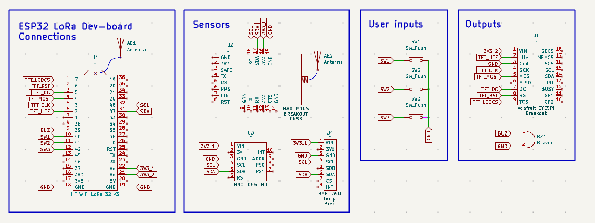
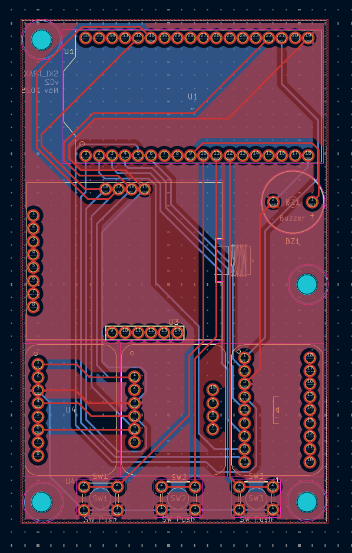
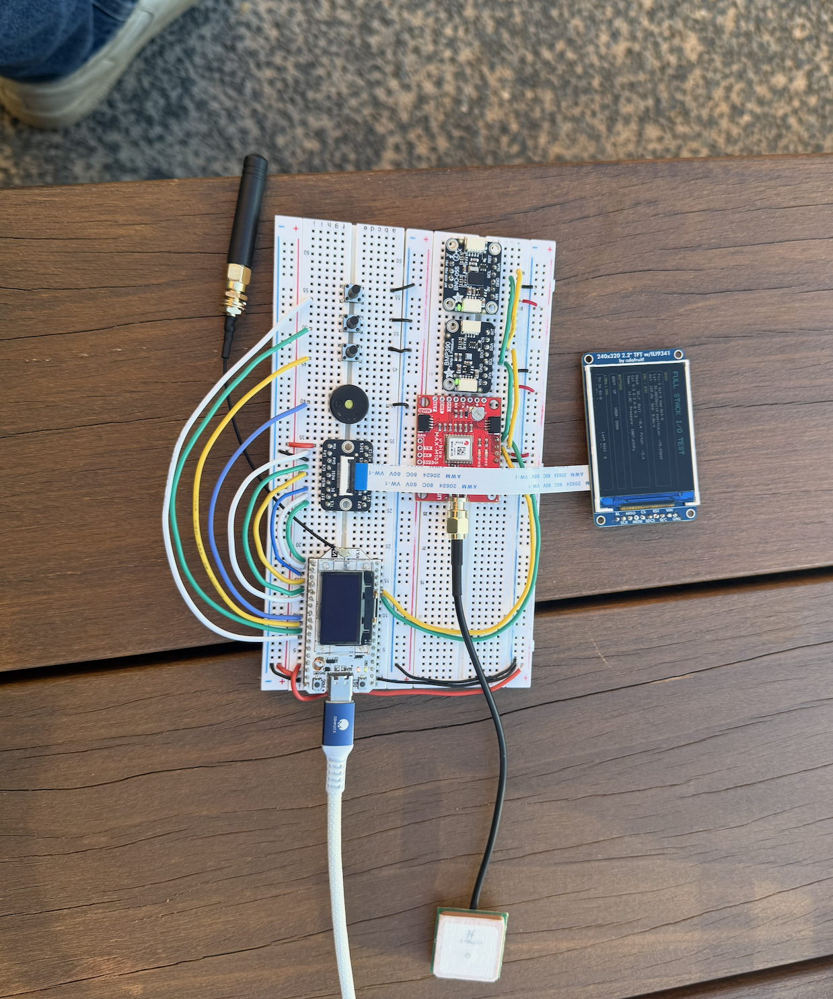
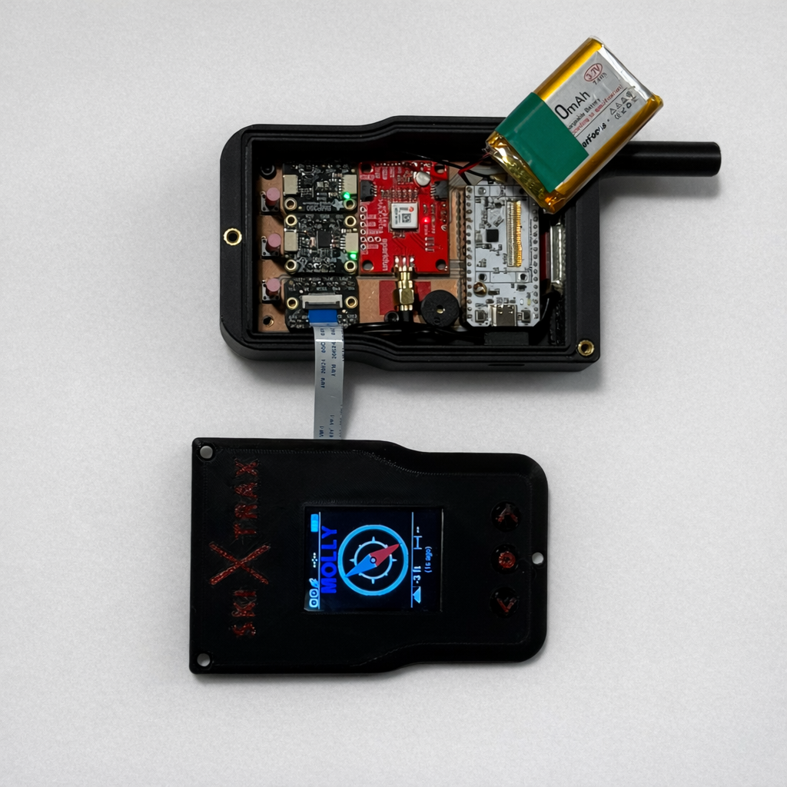
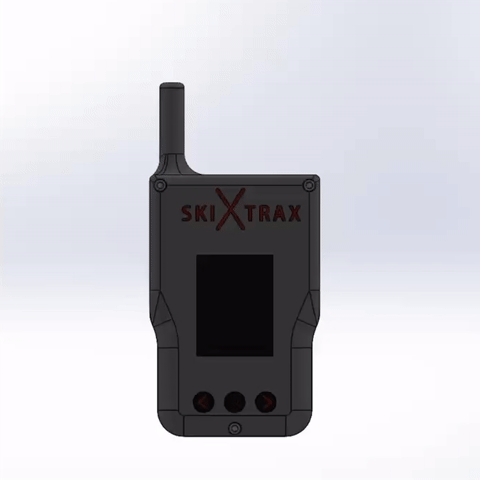
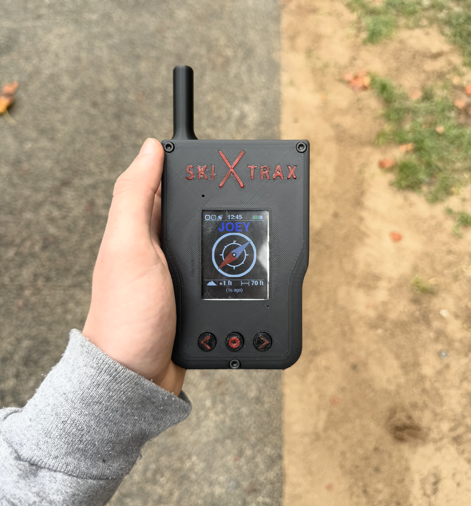
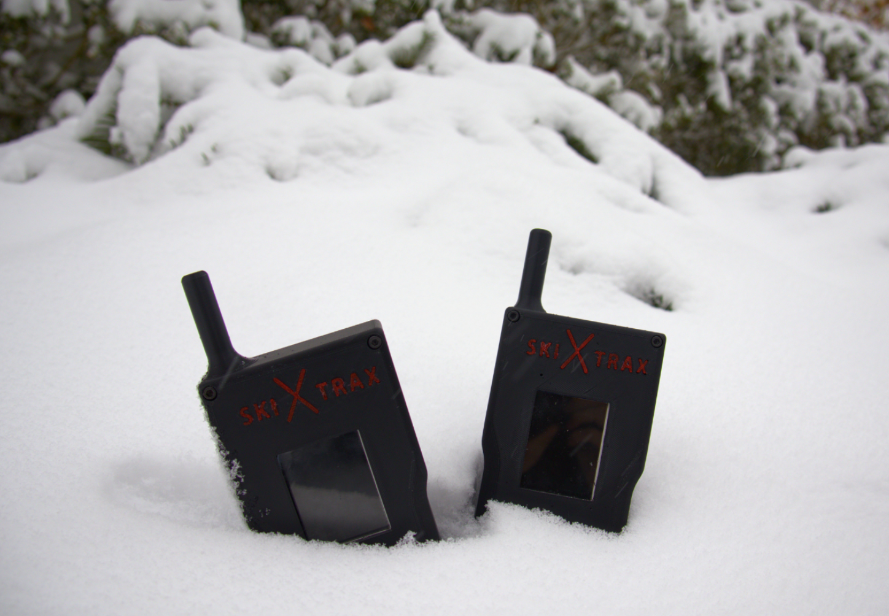

Ski Trax








→ scroll to see more →
Overview
Ski Trax is an off-grid tracking device that lets skiers locate friends and family on the slopes without cell service. Each person in a group carries a small device and can see the direction and distance to others via an on-device display with a directional arrow indicator — no phone, no cell signal required.
Technical Details
- Designed a custom PCB integrating a LoRa radio module for long-range, low-power mesh communication between devices
- GPS receiver for position acquisition; IMU for orientation sensing; barometric pressure sensor for altitude
- Developed embedded software for real-time position tracking and inter-device communication over the LoRa mesh network
- Relative bearing and distance calculation between group members computed on-device
- Designed the on-device display UI with an intuitive directional arrow indicator pointing toward other group members
Outcome
Presented a fully working prototype at the Duke Product Design Trade Show. The device successfully communicated position between units and displayed accurate bearing and distance in real-time testing.